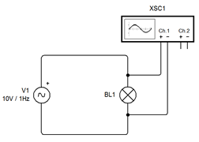
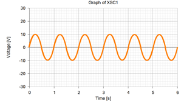
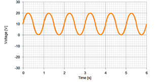

Information on your Peer Investigation Group assignment will be posted here after the due date.

With the circuit shown in figure 18-1 and a measurement across the light bulb showing in figure 18-2 the light bulb would light twice per cycle.
- Once the cycle reaches enough voltage on the half of the cycle going positive in voltage, the light bulb will light and stay lit until the voltage drops back below the voltage needed by the light bulb.
- Since a light bulb does not care which direction the current is flowing the exact same thing will happen on the negative half of the waveform.
- The light bulb will be on two different times during each cycle.
- The light bulb will be off for three separate times during each cycle.
P.I.G. question #1: How many times per second will the light bulb light?

- The light bulb will light twice per cycle.
- The since wave has a frequency of 1Hertz which gives it a period of 1 second.
- The light bulb will light twice per second.

P.I.G. question #2: Will the light bulb look any different than it did in the circuit from which figure 1 was taken? If it is different describe how it will look different.
- The waveform is now above zero volts until the negative peak, where it becomes zero volts. during the last bit of the cycle it increases voltage again.
- We would see the light bulb flash on at the same rate as the cycle, in this case once per second.
- There are actually two parts of the cycle where the light bulb would light.
- From the start of the cycle until just beforethe negative peak.
- From just after the negative peak until the end of the cycle. (the bulb would continue to glow into the next cycle)
P.I.G. question #3: Name what figure 2 is showing.
The oscilloscope is showing AC + DC, we often call it AC riding on DC. It is a 1Hz 10VPK sine wave with 10VDC added to it.